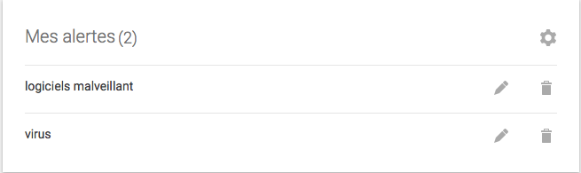

La veille technologique, consiste à s'informer en continu sur les nouveautés du secteur informatique, les inventions des Concurrents, ainsi que les nouvelles technologies, et ce dans le but d'être le meilleur dans son domaine. J’ai choisi de faire ma veille technologique sur le thème des infections des systèmes informatiques et des failles informatiques, car en effet personne qui ne peut nier avoir un jour au moins été confronté n’a ce problème. Cela va du virus faisant peut de dégâts comme ceux utiliser pour voir les habitudes d’achats ou de navigation de l’utilisateur infecté jusqu’au ransomeware qui peut paralyser une compagnie pendant plusieurs jours, en passant pas le virus espionnant vos mot de passe et identifiants.
Afin de m'informer, j'ai mis en place au début de ma veille plusieurs systèmes d'alerte afin de rester informé: Les alertes de Google:
Ensuite, je me suis abonnée à un agrégateur de réseau social qui va me permettre de sélectionner des flux qui vont m'intéresser sur des sites d'informations ou les réseaux sociaux et de confectionner ainsi mon propre magazine.